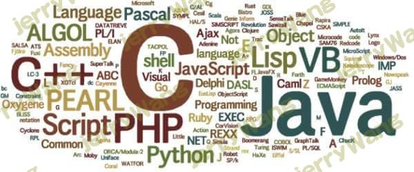
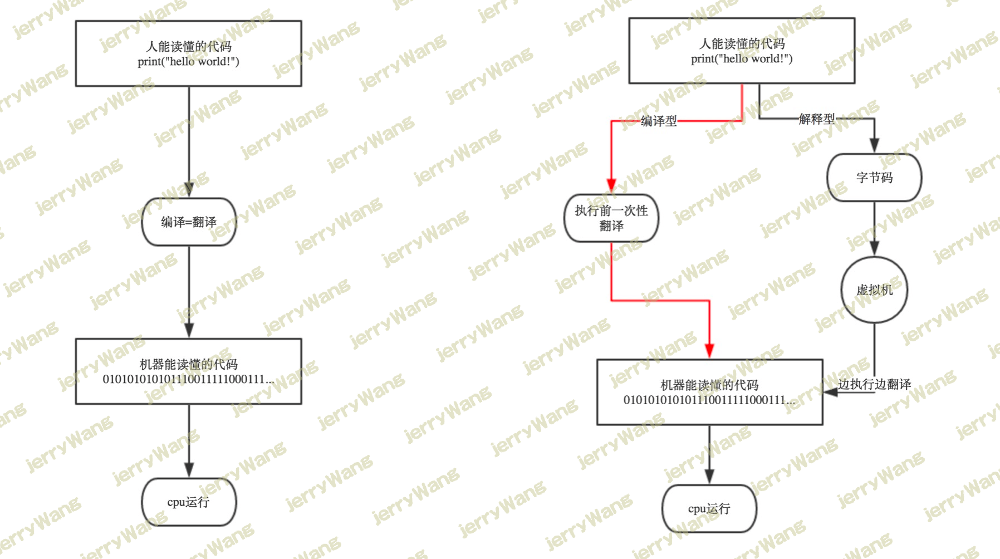

编程与编程语言
编程与编程语言

python是一门编程语言，作为学习python的开始，需要事先搞明白：编程的目的是什么？什么是编程语言？什么是编程？
编程的目的：
计算机的发明，是为了用机器取代/解放人力，而编程的目的则是将人类的思想流程按照某种能够被计算机识别的表达方式传递给计算机，从而达到让计算机能够像人脑/电脑一样自动执行的效果。
什么是编程语言？
上面提及的能够被计算机所识别的表达方式即编程语言，语言是沟通的介质，而编程语言是程序员与计算机沟通的介质。在编程的世界里，计算机更像是人的奴隶，人类编程的目的就命令奴隶去工作。
什么是编程？
编程即程序员根据需求把自己的思想流程按照某种编程语言的语法风格编写下来，产出的结果就是包含一堆字符的文件。
强调：程序在未运行前跟普通文件无异，只有程序在运行时，文件内所写的字符才有特定的语法意义
所以我有话对大家说
Python是语言，而学习语言的套路都是一样的，以英语学习为例，你需要学单词，然后学语法，最后写作文。
英语的单词—————>Python中的关键字
英语的语法—————>Python的语法
英语的作文—————>用Python语言写的程序此时你心里应该有数了，学Python其实很简单，全都是在记忆一些固定的套路而已，那为何有的人会觉得Python难呢？来看一个普遍的问题，问题中包含答案。。。。。。
经常有学生问：老师，我上课都能听得懂，为啥我就是不会写程序。
我：你这不废话么！
你学完了英语的单词、语法、还有写作文的方式，你能立刻写出一篇优美的作文吗？当然不能，那么问题出在哪里呢？
你想想，你现在用汉语跟我沟通，脑子里会不会分神去琢磨某个汉字的意思，汉语的语法应该怎样？你当然不会，你脑子里想到什么，就会很自然地将它表达出来，因为你已经足够熟练，汉语的文字、单词、语法等已经深深地植入了你的意识里。学英语，学Python都是一样的道理，你以为你会了，你可能确实会了，但你远没有达到烂熟于心的地步，因此你在写程序的时候需要考虑的是关键字的用法、语法结构，而我则只需要考虑我脑子里的逻辑如何安排，逻辑走通了程序自然就表达出来了，我完全不会考虑关键字或语法什么的，它就像是我的器官一样，我不会在想吃饭的时候考虑应该用锭眼吃还是用嘴吃，这就是你跟我的差别。
那有何好的解决方法呢？答：没有。不下狠心翻来覆去练习，知识是无法根植于你的潜意识的，你也永远无法自己写程序，就跟当年郭靖学降龙十八掌一样，洪七公要他打200下，他能打1000下，屌丝到不能再屌丝的你，没有这点意志力，就别妄想咸鱼翻身了。。。。。。
附一句：我不知道成功有没有捷径，但我确定学Python没有，没有几万行代码的洗礼，你不可能成为一名优秀的程序员，这就是我想对你说的。
编程语言分类

编程的语言的发展经历了
机器语言：站在计算机(奴隶)的角度，说计算机能听懂的语言，那就是直接用二进制编程，直接操作硬件
汇编语言：站在计算机(奴隶)的角度，简写的英文标识符取代二进制去编写程序，本质仍然是直接操作硬件
高级语言：站在人(奴隶主)的角度，说人话，即用人类的字符去编写程序，屏蔽了硬件操作
高级语言更贴近人类语言，因而造成了：它必须被翻译成计算机能读懂二进制后，才能被执行，按照翻译方式分为
- 编译型（需要编译器，相当于用谷歌翻译）：如C，执行速度快，调试麻烦
- 解释型（需要解释器，相当于同声传译）：如python，执行速度慢，调试方便
总结：
1 | 机器语言 |
机器语言、汇编语言、高级语言详解
1 | #机器语言 |
主流编程语言介绍
世界上的编程语言有600多种，但真正大家主流在使用的最多二三十种，不同的语言有自己的特点和擅长领域，随着计算机的不断发展，新语言在不断诞生，也同时有很多老旧的语言慢慢无人用了。有个权威的语言排名网站，可以看到主流的编程语言是哪些
数据来自 TIOBE排行榜 ， TIOBE开发语言排行榜每月更新一次，依据的指数是基于世界范围内的资深软件工程师和第三方供应商提供，其结果作为当前业内程序开发语言的流行使用程度的有效指标。
| Oct 2019 | Oct 2018 | Change | Programming Language | Ratings | Change |
|---|---|---|---|---|---|
| 1 | 1 | Java | 16.884% | -0.92% | |
| 2 | 2 | C | 16.180% | +0.80% | |
| 3 | 4 |  | Python | 9.089% | +1.93% |
| 4 | 3 |  | C++ | 6.229% | -1.36% |
| 5 | 6 | | C# | 3.860% | +0.37% |
| 6 | 5 | | Visual Basic .NET | 3.745% | -2.14% |
| 7 | 8 | | JavaScript | 2.076% | -0.20% |
| 8 | 9 | | SQL | 1.935% | -0.10% |
| 9 | 7 | | PHP | 1.909% | -0.89% |
| 10 | 15 |  | Objective-C | 1.501% | +0.30% |
| 11 | 28 | | Groovy | 1.394% | +0.96% |
| 12 | 10 | | Swift | 1.362% | -0.14% |
| 13 | 18 | | Ruby | 1.318% | +0.21% |
| 14 | 13 | | Assembly language | 1.307% | +0.06% |
| 15 | 14 | | R | 1.261% | +0.05% |
| 16 | 20 | | Visual Basic | 1.234% | +0.58% |
| 17 | 12 |  | Go | 1.100% | -0.15% |
| 18 | 17 | | Delphi/Object Pascal | 1.046% | -0.11% |
| 19 | 16 | | Perl | 1.023% | -0.14% |
| 20 | 11 | | MATLAB | 0.924% | -0.39% |
长期语言排名
| Programming Language | 2019 | 2014 | 2009 | 2004 | 1999 | 1994 | 1989 |
|---|---|---|---|---|---|---|---|
| Java | 1 | 2 | 1 | 1 | 3 | - | - |
| C | 2 | 1 | 2 | 2 | 1 | 1 | 1 |
| Python | 3 | 7 | 6 | 6 | 22 | 20 | - |
| C++ | 4 | 4 | 3 | 3 | 2 | 2 | 2 |
| Visual Basic .NET | 5 | 9 | - | - | - | - | - |
| C# | 6 | 5 | 5 | 7 | 17 | - | - |
| JavaScript | 7 | 8 | 8 | 9 | 13 | - | - |
| PHP | 8 | 6 | 4 | 5 | - | - | - |
| SQL | 9 | - | - | 89 | - | - | - |
| Objective-C | 10 | 3 | 26 | 36 | - | - | - |
| Lisp | 32 | 17 | 16 | 13 | 14 | 5 | 3 |
| Pascal | 219 | 15 | 14 | 88 | 7 | 3 | 21 |
几个主流的编程语言介绍 ：
C语言:
C语言是一种计算机程序设计语言，它既具有高级语言的特点，又具有汇编语言的特点。它由美国贝尔研究所的D.M.Ritchie于1972年推出，1978年后，C语言已先后被移植到大、中、小及微型机上，它可以作为工作系统设计语言，编写系统应用程序，也可以作为应用程序设计语言，编写不依赖计算机硬件的应用程序。它的应用范围广泛，具备很强的数据处理能力，不仅仅是在软件开发上，而且各类科研都需要用到C语言，适于编写系统软件，三维，二维图形和动画，具体应用比如单片机以及嵌入式系统开发。C++：
C++是C语言的继承的扩展，它既可以进行C语言的过程化程序设计，又可以进行以抽象数据类型为特点的基于对象的程序设计，还可以进行以继承和多态为特点的面向对象的程序设计。C++擅长面向对象程序设计的同时，还可以进行基于过程的程序设计，因而C++就适应的问题规模而论，大小由之。
C++不仅拥有计算机高效运行的实用性特征，同时还致力于提高大规模程序的编程质量与程序设计语言的问题描述能力。JAVA:
Java是一种可以撰写跨平台应用软件的面向对象的程序设计语言，是由Sun Microsystems公司于1995年5月推出的Java程序设计语言和Java平台（即JavaSE, JavaEE, JavaME）的总称。Java 技术具有卓越的通用性、高效性、平台移植性和安全性，广泛应用于个人PC、数据中心、游戏控制台、科学超级计算机、移动电话和互联网，同时拥有全球最大的开发者专业社群。在全球云计算和移动互联网的产业环境下，Java更具备了显著优势和广阔前景。PHP:
PHP（外文名:PHP: Hypertext Preprocessor，中文名：“超文本预处理器”）是一种通用开源脚本语言。语法吸收了C语言、Java和Perl的特点，利于学习，使用广泛，主要适用于Web开发领域
Ruby:
Ruby 是开源的，在Web 上免费提供，但需要一个许可证。[4]
Ruby 是一种通用的、解释的编程语言。
Ruby 是一种真正的面向对象编程语言。
Ruby 是一种类似于 Python 和 Perl 的服务器端脚本语言。
Ruby 可以用来编写通用网关接口（CGI）脚本。
Ruby 可以被嵌入到超文本标记语言（HTML）。
Ruby 语法简单，这使得新的开发人员能够快速轻松地学习 RubyGO:
Go 是一个开源的编程语言，它能让构造简单、可靠且高效的软件变得容易。
Go是从2007年末由Robert Griesemer, Rob Pike, Ken Thompson主持开发，后来还加入了Ian Lance Taylor, Russ Cox等人，并最终于2009年11月开源，在2012年早些时候发布了Go 1稳定版本。现在Go的开发已经是完全开放的，并且拥有一个活跃的社区。
由其擅长并发编程Python:
Python是一门优秀的综合语言， Python的宗旨是简明、优雅、强大，在人工智能、云计算、金融分析、大数据开发、WEB开发、自动化运维、测试等方向应用广泛，已是全球第4大最流行的语言。
 微信
微信 支付宝
支付宝